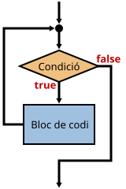
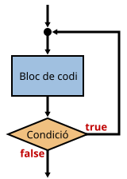

Aquestes estructures també s'anomenen iteracions o bucles.
Normalment no es desitja que el bucle es repeteixi infinites vegades, per tant cal posar una condició de repetició: el bucle es repetirà mentre aquesta condició sigui certa.
Si no es vol que el bucle es repeteixi de forma indefinida deixant el programa "penjat", cal assegurar-se que en algun moment la condició per repetir el bucle serà falsa.

Serveix per executar un bloc de codi mentre la condició de repetició sigui certa.
Normalment s'utilitza quan no se sap quantes vegades s'ha d'executar el bucle.
La sintaxi és:
while (condicio_repeticio) {
// Codi que s'executarà repetidament
}
Si la primera vegada la condició és falsa, el codi no s'executa cap vegada:
let n = 10;
while (n < 10) {
n++;
}
De vegades pot interessar fer un bucle que es repeteixi de forma indefinida.
Si és el cas, només cal posar true en la condició:
while (true) {
let n = prompt("Escriu un número enter");
alert("El doble de " + n + " és " + (n * 2));
}

Igual que while, però el codi s'executa al menys una vegada.
La sintaxi és:
do {
// Codi que s'executarà repetidament
} while (condicio_repeticio);
A diferència de l'exemple anterior, la variable s'incrementa en 1:
let n = 10;
do {
n++;
} while (n < 10);